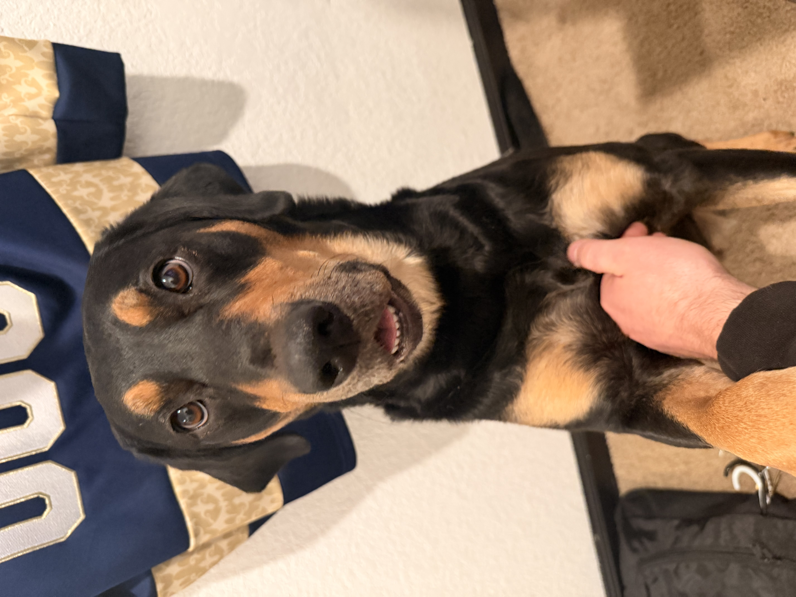
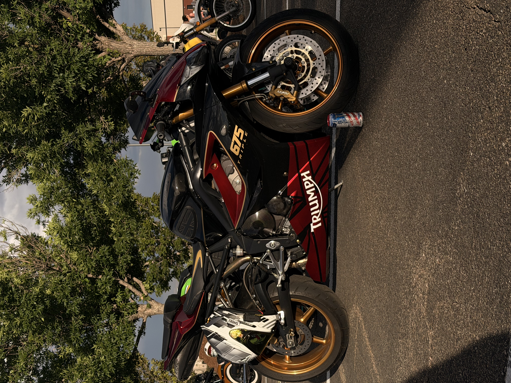

Hello, I'm Mason Armijo

Brief Introduction
Hi, I'm Mason Armijo! I am a US Army Veteran of 8 years and currently hold a Top Secret/SCI clearance. I am a first year student at MSU Denver pursuing a Bachelors Degree in Cybersecurity with the hopes of furthering my knowledge in the field to boost my career. Some of my hobbies include motorcycles, gaming, as well as spending time with my dog Yuffie (Yoo-Fee). I am very interested in the field of Cyber Security and look forward to furthering my knowledge in the field.

My Dog Yuffie
My loyal companion and partner in crime Yuffie! I have had Yuffie for just over 3 years, and i adopted her from the animal shelter. She is a Labrador Retriever and Rottweiler mix, and the best friend anyone could ask for. She keeps me on my toes and is always there to keep me company. She is a very smart dog and has been trained in basic obedience, as well as some advanced tricks.

My Triumph Daytona 675
This is my 2006 Triumph Daytona 675. I have been riding motorcycles since 2019 and this has been my favorite by far. It is perfectly balanced and has a great power to weight ratio. It is a very fun bike to ride and is extemely reliable. There is nothing like riding on two wheels with the wind and sound of nature all around you!